Modul prodaje
Modul prodaje u programu Microsoft Dynamics 365 Business Central omogućava praćenje celokupnog procesa prodaje robe kupcima. Ovaj modul obuhvata upravljanje informacijama o artiklima, kupcima, kontaktima i različitim prodajnim dokumentima, uključujući prodajne ponude, naloge za prodaju, izlazne fakture i odobrenja.
Pored osnovnih funkcionalnosti, modul omogućava i praćenje prodajnih naloga, analiza prodaje i izveštaja, čime se obezbeđuje potpuna kontrola nad procesom prodaje. Da bi sistem ispravno pratio sve relevantne informacije, neophodno je unapred definisati odgovarajuće postavke, uključujući konfiguraciju kupaca, uslove prodaje, načine plaćanja i pravila knjiženja.
1. Podešavanje prodaje i potraživanje
Na kartici Postavka prodaje i potraživanja nalaze se ključne postavke potrebne za ispravno funkcionisanje procesa prodaje u programu Microsoft Dynamics 365 Business Central. Ova kartica, slično karticama artikla, kupca i dobavljača, organizovana je u više brzih kartica koje grupišu srodne postavke radi lakšeg pregleda i podešavanja.
Brze kartice i njihove funkcije
Brze kartice sadrže postavke koje utiču na različite aspekte prodaje, uključujući:
- Opšte postavke – osnovni parametri prodaje i potraživanja
- Plaćanja i uslovi prodaje – definisanje načina i rokova plaćanja
- Knjiženje i računi – pravila knjiženja i povezivanje s finansijskim kontima
- Odobrenja i limiti kredita – kontrola dugovanja kupaca i proces odobravanja prodajnih dokumenata
Ove postavke omogućavaju precizno prilagođavanje sistema poslovnim potrebama, osiguravajući tačnost i doslednost u prodajnim transakcijama.
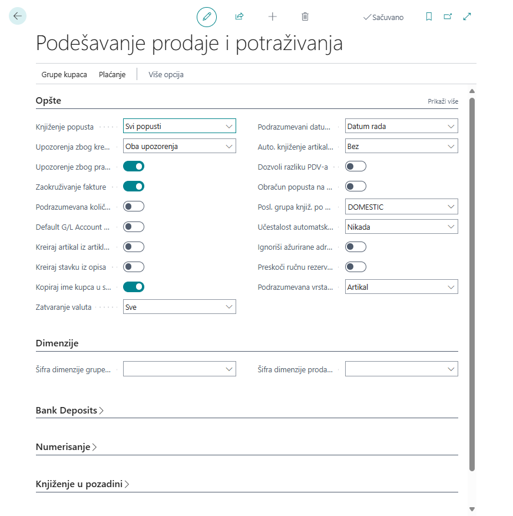
Brze kartice i polja na Podešavanju prodaje i potraživanja detaljnije su opisane u nastavku.
Opšte
Na brzoj kartici "Opšte" mogu se postaviti sledeća polja:
- Knjiženje popusta – određuje vrstu popusta nabavke za zasebno knjiženje:
- Bez popusta: popusti se neće zasebno knjižiti, oduzeće se pre knjiženja (na računskom planu se neće videti iznos popusta).
- Popust na fakturu: istovremeno će se knjižiti popust na fakturu i iznos fakture (na računskom planu će se videti iznos popusta).
- Popust na red: istovremeno će se knjižiti popust na red i iznos fakture (na računskom planu će se videti iznos popusta).
-
Svi popusti: istovremeno će se knjižiti popusti na red i fakturu, kao i iznos fakture (na računskom planu će se videti oba iznosa popusta).
-
Upozorenje o kreditnom limitu – određuje da li će biti upozorenje o statusu kupca prilikom izrade prodajnog naloga ili fakture:
- Kreditni limit
- Dospeli saldo
- Oba upozorenja
-
Bez upozorenja
-
Otpremnica uz fakturu (DA/NE) – određuje da li se knjiženjem fakture automatski kreiraju proknjižena otpremnica i proknjižena faktura.
-
Zaokruživanje iznosa fakture (DA/NE) – određuje da li se iznosi zaokružuju za izlazne fakture.
-
Kopiraj ime kupca u stavke (DA/NE) – određuje da li će ime kupca sa kartice biti kopirano prilikom knjiženja na stavke analitike kupaca.
-
Obavezan broj spoljnog dokumenta (DA/NE) – određuje da li je obavezno uneti broj spoljnog dokumenta na zaglavlju prodaje.
-
Zatvaranje valuta – određuje u kojoj meri je dopušteno zatvaranje uplata kupca u različitim valutama:
- Nema – sve stavke uključene u zatvaranje moraju biti u istoj valuti.
- EMU – mogu se zatvoriti stavke u eurima, kao i u nekim od starih nacionalnih valuta (za države u kojima je euro).
-
Sve – mogu se međusobno zatvarati stavke u različitim valutama.
-
Obavezni tačni troškovi provračaja (DA/NE) – označava da se povratna transakcija ne može knjižiti osim ako polje Izvorna stavka artikla za zatvaranje na redu prodajne porudžbine sadrži stavku.
-
Provera akontacije/avansa kod knjiženja (DA/NE) – označava da se ne može otpremiti ili fakturisati nalog koji ima neplaćeni iznos avansa.
-
Podrazumevani datum knjiženja – određuje kako se koristi Datum knjiženja na prodajnim dokumentima:
- Datum obrade – u polju Datum knjiženja biće zadat Datum obrade.
-
Nema datuma – polje Datum knjiženja biće prazno i biće ručno uneseno pre knjiženja.
-
Podrazumevana količina za otpremu – označava zadatu vrednost koja je unesena u polje Količina za otpremu u redu naloga za prodaju.
-
Kopiraj opis reda u stavke GK – određuje da li će se kopirati opis sa redova dokumenta vrste Račun GK na stavke GK.
Dimenzije
Na brzoj kartici "Dimenzije" moguće je definisati dimenzije koje će se koristiti za grupe kupaca i za prodavce u izveštajima analize prodaje.
Brojčane serije
Na brzoj kartici "Brojčane serije" moguće je postaviti brojčane serije koje će se koristiti za matične podatke i dokumente unutar modula prodaje.
Pozadina knjiženja
Ako poslovni procesi zahtevaju pozadinsko knjiženje, na ovoj brzoj kartici može se postaviti za prodajne dokumente.
Arhiviranje
Na brzoj kartici "Arhiviranje" moguće je postaviti koji prodajni dokumenti će se arhivirati.
2. Rezervacija artikla
2.1 Alokacija zaliha i rezervacija artikla
Kada je nabavka artikla ograničena, potrebno je alocirati postojeću ili buduću zalihu za određeni red naloga za prodaju. Alokacijom artikla moguće je sprečiti upotrebu zaliha u druge svrhe i osigurati da se porudžbina kupca može otpremiti na planirani datum otpreme.
U programu Microsoft Dynamics 365 Business Central, ova se alokacija vrši kroz rezervacije artikla. Od svih vrsta prodaje na redovima prodaje, moguće je rezervisati samo artikle.
Opcija rezervacije artikla zavisi pre svega od podešavanja u polju Rezerviši na kartici artikla (brza kartica "Planiranje") i na kartici kupca, gde je moguće odrediti pravila na osnovu artikla ili određenog kupca.
Postavka na kartici artikla:
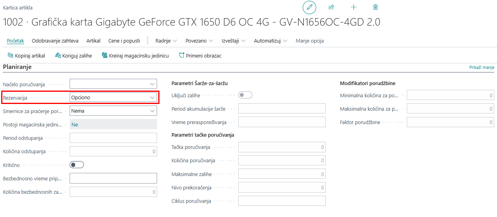
Postavka na kartici kupca:
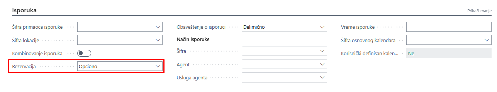
2.2 Opcije u polju "Rezerviši"
Opcije koje je moguće odabrati u polju Rezerviši su:
- Nikad: artikal se ne može rezervisati.
- Po izboru: sistem ne rezerviše stavku automatski, ali se može rezervisati ručno.
- Uvek: artikal se uvek rezerviše.
U procesu prodaje moguće je rezervisati artikle za naloge za prodaju, ali ih je moguće rezervisati i u Nabavnim porudžbinama, servisnim nalozima, nalogima za montažu i radnim nalozima.
Moguće je rezervisati artikle na zalihama ili očekivane ulazne artikle na otvorenim redovima dokumenata ili naloga.
Za rezervaciju artikala potrebno je otvoriti stranicu Rezervacija. To se može uraditi s prodajne porudžbine na sledeći način:
- Kliknite na Red.
- Zatim odaberite Funkcije.
- Izaberite Rezerviši.
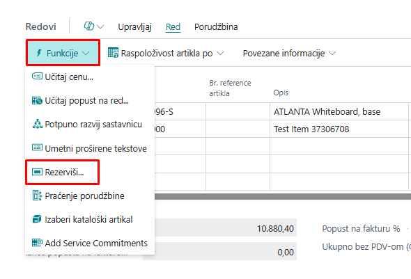
Svaki red na stranici Rezervacija prikazuje podatke o jednoj vrsti reda (prodaja, nabavka, naloga) ili stavke artikla. Redovi opisuju koliko artikala je dostupno za rezervisanje za svaku vrstu reda ili stavke. Stranica Rezervacija omogućuje rezervaciju, izmenu ili otkazivanje rezervacije.
Prikaz stranice Rezervacija:
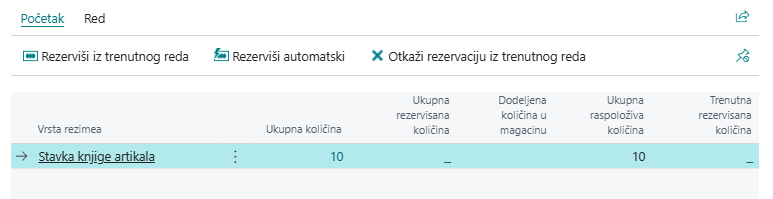
3. Proces prodaje
Dokumenti za evidenciju prodajnih transakcija u Dynamics 365 Business Central
U programu Microsoft Dynamics 365 Business Central u modulu prodaje koriste se sledeći dokumenti za evidentiranje prodajnih transakcija:
- Prodajna ponuda
- Okvirna prodajna porudžbina
- Prodajna porudžbina
- Izlazna faktura
- Proknjižena izlazna faktura
- Proknjižena isporuka
- Izlazno odobrenje
- Nalog za povrat prodatog
- Proknjiženo izlazno odobrenje
- Proknjižena prijemnica povrata
3.1 Proces prodaje u Dynamics 365 Business Central
Proces prodaje može početi od prodajne ponude ili okvirne prodajne porudžbine, koje se mogu pretvoriti u Prodajnu porudžbinu.
- Knjiženje isporuke na prodajnoj porudžbini rezultira proknjiženom isporukom, čime se smanjuje količina artikla na zalihi.
- Knjiženje fakture stvara proknjiženu izlaznu fakturu, koja ažurira podatke na kartici kupca, ažurira artikle i ažurira račun GK.
- Knjiženje uplate kupca ažurira karticu kupca i račun GK.
Na redove dokumenata prodaje u sistemu, u polje Vrsta, mogu se odabrati sledeći entiteti za koje se knjiži prodaja:
- Artikal – standardni artikli poput robe, sirovina, gotovih proizvoda ili usluga poput konsultacija.
- Resurs – osoba ili mašina.
- Osnovna sredstva – za prodaju osnovnih sredstava i sitnog inventara.
- Trošak (artikal) – dodatni troškovi u prodajnom procesu radi ispravnog vrednovanja zaliha, poput troška prevoza.
- Račun GK – za knjiženje svih drugih nerazvrstanih ishoda.
Iako je moguće odabrati pet vrsta prodaje, najčešće se koriste artikli i resursi.
U nastavku su detaljnije pojašnjeni dokumenti u prodaji.
3.2 Okvirna prodajna porudžbina
Okvirna prodajna porudžbina je dokument koji ne utiče na proračun raspoloživosti artikala. Često se koristi u svrhu ugovora, gde se sa kupcem dogovore određeni artikli i količina, a potom se, zavisno od uslova, vrši isporuka tih artikala.
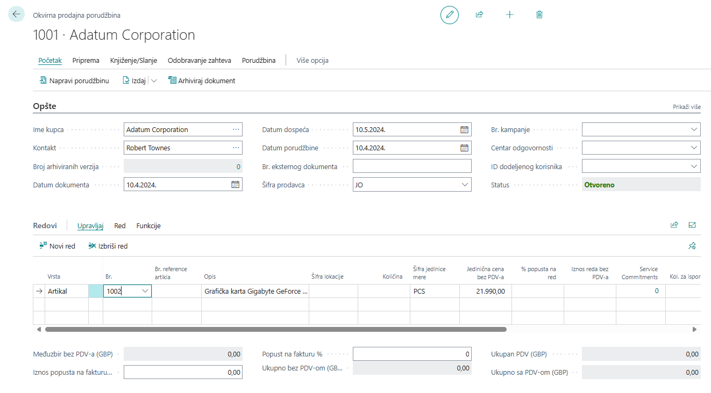
Kada iz okvirnog naloga za prodaju kreiramo nalog za prodaju, potrebno je u polje Kol. za isporuku uneti podatak za koju količinu želite kreirati dokument (u ovom primer 1 komada), što se radi na alatnoj traci Početak -> Napravi porudžbinu.
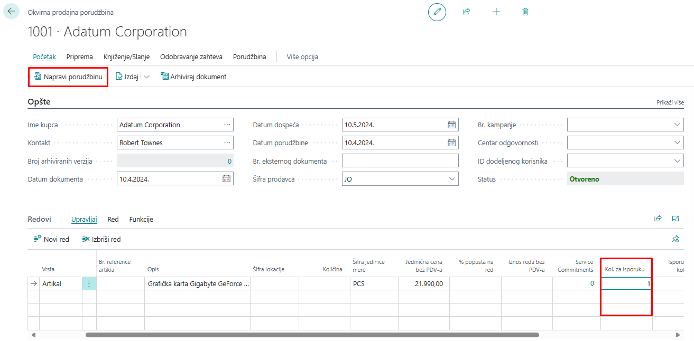
Kreirana prodajna porudžbina se dalje po redovnoj proceduri isporučuje i fakturiše. Nakon završenog knjiženja na okvirnoj prodajnoj porudžbini se u polju Isporučena količina može videti informacija o tome koliko je već isporučeno i preostalo:
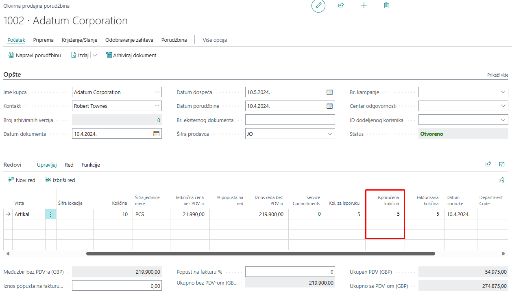
3.3 Prodajna ponuda
Osim okvirne prodajne porudžbine, moguće je kreirati prodajnu ponudu kao informativni dokument kupcu koji je zainteresovan za određene artikle.
U redove prodajne ponude upisuju se:
- Artikli
- Osnovna sredstva
- Računi GK
- Resursi
- Troškovi artikla
Za odabranu vrstu u redu moguće je uneti dodatne podatke, kao što su:
- Količina
- Šifra lokacije s koje će se knjižiti otprema
- Jedinica mere
- Jedinični trošak
- Popust na red, itd.
Ako kupac pristane na prodajnu ponudu i uslove koji su na njoj, a koji se još uvek mogu promeniti, dokument se prebacuje iz ponude u nalog klikom na akciju Napravi porudžbinu. Celi dokument se zatim prebacuje u Prodajnu porudžbinu, koja se potom može knjižiti.
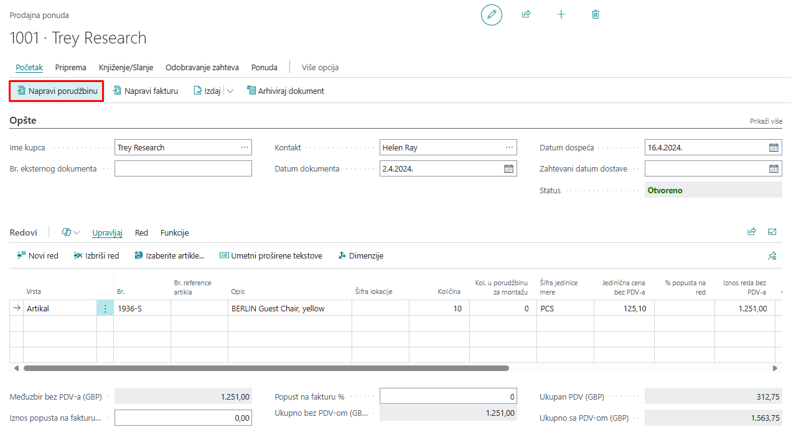
3.4 Prodajna porudžbina
Kao i prethodna dva dokumenta, prodajna porudžbina se sastoji od zaglavlja i redova, gde je zaglavlje podeljeno na više brzih kartica unutar kojih su polja relevantna za svaku karticu. Na brzoj kartici moguće je prikazati više polja klikom na Prikaži više i po potrebi popuniti podatke u tim poljima.
Ako je proces započet iz prodajne ponude i ista prebačena u naloge za prodaju, potrebno je proveriti da li su svi podaci ispravni ili je potrebno nešto promeniti (npr. način plaćanja, uslov plaćanja itd.). U redovima se može promeniti količina ili, ako želimo delimičnu isporuku, možemo promeniti polje Kol. za isporuku ili Kol. za fakturisanje ako se radi o fakturisanju.
Nalog za prodaju je moguće knjižiti jednom od tri ponuđene opcije, klikom na akciju Proknjiži (ili Proknjiži i ispiši), a zatim se pojavljuje prozor sa sledećim opcijama:
-
Isporuči – knjiži se samo isporuka artikla i to one količine definisane u polju Kol. za isporuku. Odabirom ove opcije na redovima se ažuriraju vrednosti u poljima Kol. za isporuku i Isporučena količina.
-
Fakturiši – knjiži se samo fakturisanje i to one količine definisane u polju Kol. za fakturisanje. Odabirom ove opcije na redovima se ažuriraju vrednosti u poljima Kol. za fakturisanje i Fakturisana količina. Nije moguće fakturisati veću količinu od one definisane u polju Isporučena količina i već fakturisane količine.
-
Isporuči i fakturiši – knjiži se i isporuka i fakturisanje. Odabirom ove opcije na redovima se ažuriraju vrednosti u poljima Kol. za isporuku, Isporučena količina, Kol. za fakturisanje i Fakturisana količina.
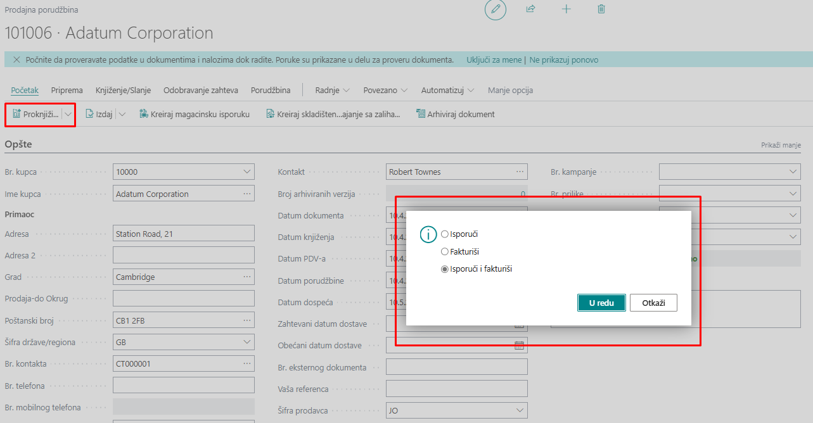
Knjiženjem otpreme nastaje dokument Proknjižena isporuka, dok knjiženjem fakturisanja nastaje dokument Proknjižena izlazna faktura, o čemu ćemo detaljnije govoriti u nastavku.
Takođe, knjiženjem isporuka nastale su stavke analitike artikla i stavke vrednosti. Knjiženjem fakturisanja ažurira se stavka analitike artikla i nastaje nova stavka vrednosti sa stvarnim troškom. Isto tako, nastale su stavke GK, stavka PDV-a, i stavke analitike kupaca.
Ako je knjiženjem isporuke i fakturisana celokupna količina sa prodajne porudžbine, isti dokument se smatra završenim. Sistem automatski briše dokument i arhivira ga ako je uključena opcija arhiviranja.
3.4.1 Direktna isporuka
Jedna od dodatnih mogućnosti knjiženja isporuke u sistemu je Direktna isporuka, gde se zapravo porudžbinom kupca kreira porudžbina od dobavljača. Taj isti dobavljač zatim isporučuje robu direktno kupcu.
Nakon što se kreira prodajna porudžbina i unesu artikli, potrebno je artiklu za koji se vrši direktna isporuka označiti polje Direktna isporuka = DA.
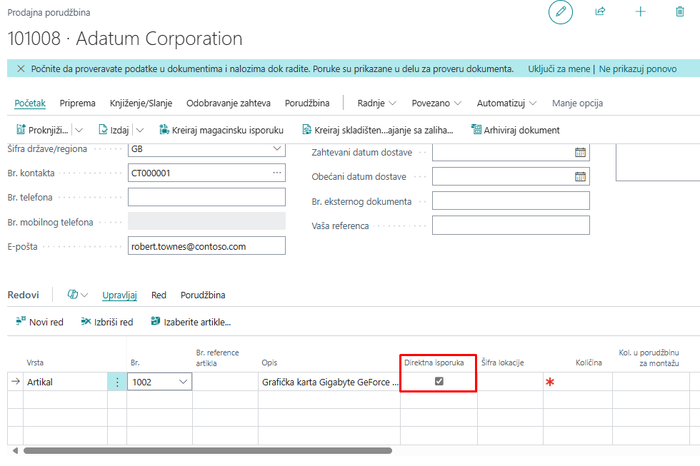
Nakon toga se kreira Nabavna porudžbina te osim popunjavanja standardnih polja na zaglavlju (redove ne popunjavamo), potrebno je sledeće:
Na brzoj kartici Isporuka i Plaćanje, u polju Isporuka odabrati vrednost Adresa kupca, čime se prikazuje polje Kupac i u kojem je potrebno odabrati kupca za kojeg se radi isporuka. U ovom slučaju se radi o preduzeću kao kupcu.
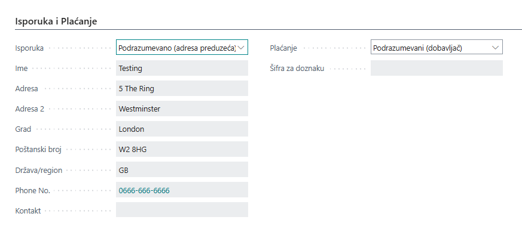
Ako kupac ima definisanu šifru za isporuku, ona se može izabrati u polju Šifra primaoca isporuke. Ovaj podatak se takođe može uneti direktno na porudžbinu.
Ako šifra primaoca nije definisana, koristiće se adresa koja je postavljena na kartici kupca.
Nakon što se popune šifra kupca i adresa, potrebno je preko alatne trake učitati prodajnu porudžbinu za koju se vrši direktna isporuka.
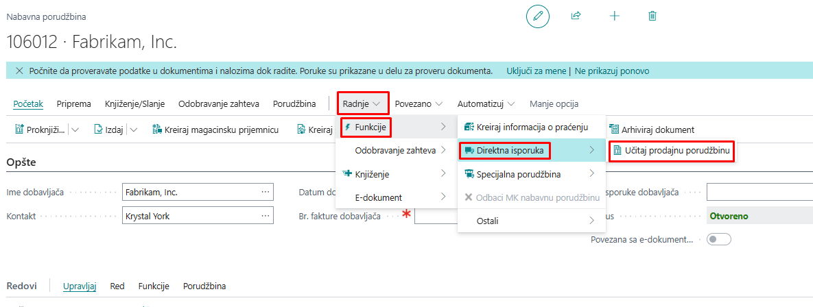
Klikom na akciju Učitaj prodajnu porudžbinu prikazuju se sve otvorene prodajne porudžbine za definisanog kupca. Potrebno je odabrati onu za koju se vrši direktna isporuka.
Ako nije jasno koji je broj porudžbine, preko akcije Kartica moguće je otvoriti dokument i proveriti njegove detalje.
Takođe, ako u redovima prodajne porudžbine ne postoji artikal sa označenim poljem Direktna isporuka = DA, taj dokument neće moći da se odabere za direktnu isporuku.
Odabirom dokumenta, popunjavaju se redovi na Nabavnoj porudžbini i za istu je onda moguće knjižiti prijem, što automatski knjiži i isporuku na Prodajnoj porudžbini. Direktna isporuka sa porudžbine ne može se istovremeno primiti i fakturisati.
Fakturisanje se vrši iz Prodajne porudžbine, nakon što je fakturisana u potpunosti ona količina za koju se radila direktna isporuka, tek onda je moguće knjižiti ulaznu fakturu za povezanu porudžbinu.
3.5 Prodajna faktura
Prodajna faktura se kreira na gotovo identičan način kao i Prodajna porudžbina. Koristi se u sledećim slučajevima:
- Fakturisanje proknjiženih isporuka
- Finansijsko knjiženje stavki koristeći Konto GK ili Osnovno sredstvo u redovima
- Direktno knjiženje artikala sa izlazne fakture (u tom slučaju ne nastaje proknjižena izlazna otpremnica, osim ako nije drugačije podešeno u Podešavanju prodaje i potraživanja)
- Zbirno fakturisanje, odnosno fakturisanje više isporuka
Postupak kreiranja prodajne fakture
- Kreirati prodajnu fakturu i popuniti sva potrebna polja na zaglavlju fakture.
- Učitati redove isporuke klikom na opciju Učitaj redove isporuke u alatnoj traci redova.
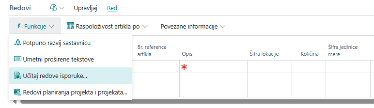
Klikom na akciju, otvara se zasebna stranica s listom redova proknjiženih izlaznih otpremnica, gde je moguće odabrati za koji red se želi kreirati faktura.
Ostatak procesa je identičan, gde je potrebno proveriti da li je sve u redu, eventualno promeniti cenu ili popust te knjižiti fakturu. Osim što je izlaznu fakturu moguće kreirati na gore prikazan način, fakturu je moguće napraviti i direktno sa Prodajne porudžbine tako da se odabere opcija Fakturiši ili Isporuči i fakturiši, gde će se prema poljima Kol. za isporuku i Kol. za fakturisanje fakturisati količine.
3.6 Povrati u prodaji
Proces povrata u prodaji započinje kreiranjem Naloga za povrat prodate robe.
Koraci u procesu povrata:
Knjiženje zaprimanja povrata
- Nakon što se roba vrati, knjiži se prijem robe putem Naloga za povrat prodate robe.
- Time nastaje Proknjižena prijemnica povrata.
- Količina artikla na zalihama se povećava.
Knjiženje odobrenja
- Nakon obrade povrata, izdaje se Proknjiženo izlazno odobrenje.
- Ažuriraju se sledeći podaci:
- Kartica kupca
- Stanje artikla
- Račun glavne knjige (GK)
Knjiženje povrata novca kupcu
- Kada se izvrši povrat novca, sistem ažurira:
- Karticu kupca
- Račun GK
3.6.1 Nalog za povraćaj prodatog
U slučaju da kupac vraća artikle, taj poslovni događaj se registruje kreiranjem i knjiženjem Prodajnog povraćaja.
Kreiranje Naloga za povrat prodate robe
- Dokument se kreira kako bi se evidentirao povrat artikala od kupca.
Knjiženje Naloga za povrat prodate robe
- Knjiženjem ovog naloga nastaju:
- Proknjiženo izlazno odobrenje
- Proknjižena prijemnica povrata
- Količina artikala na zalihama se povećava.
Očuvanje originalnog troška povrata
- Kako bi se osiguralo da se povrat knjiži sa istim troškom, koristi se funkcija:
- Učitaj redove proknjiženog dokumenta za obrtanje
- Ova funkcija omogućava učitavanje originalnih redova iz proknjiženog dokumenta prodaje, čime se osigurava da se vrednosti i troškovi povrata poklapaju sa originalnom prodajom.
Knjiženje povrata novca kupcu
- Kada se izvrši povrat novca, sistem automatski ažurira:
- Karticu kupca
- Račun glavne knjige (GK)
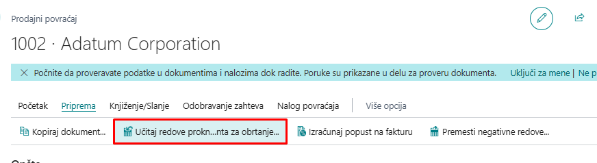
Ova funkcija kopira redove s jednog ili više proknjiženih dokumenata kupca definisanog na zaglavlju. Klikom na akciju, otvara se prozor s redovima proknjiženih dokumenata one vrste koja se odabere u filteru. Moguće opcije su Proknjižene otpremnice, Proknjižene fakture, Proknjižene prijemnice povrata i Proknjižena odobrenja:
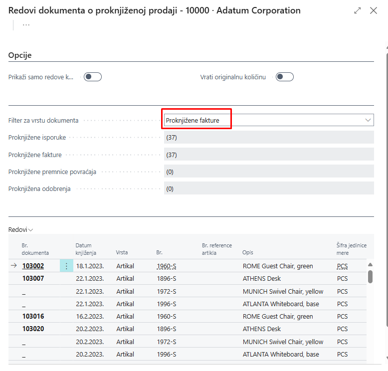
Na taj način, u redovima se popuni polje Izvorna stavka artikla za zatvaranje, čime se osigurava ispravan trošak artikla. Nakon toga, knjiži se prijem ili se prima i fakturiše, čime nastane i proknjiženo izlazno odobrenje.
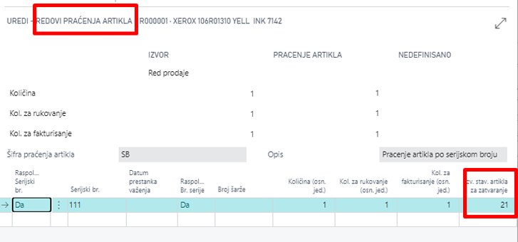
Ukoliko se vrši paćenja artikla ( po serijskom broju ili šarži ) taj podatak će biti vidljiv na redovima praćenja artikla.
3.6.2 Prodajno odobrenje
Prodajno odobrenje se obično kreira u slučajevima kada kupcu želimo naknadno odobriti određeni popust zbog različitih razloga, kao što su:
- Oštećenje robe
- Nezadovoljstvo rokom isporuke
- Drugi opravdani razlozi
Kreiranje prodajnog odobrenja
Odabir vrste stavke u redovima odobrenja
- Ako je stavka artikal, tada će se artikal vratiti na stanje.
- Ako se želi kupcu odobriti popust bez povrata artikla, koristi se:
- Trošak (artikal) – ažurira se trošak artikla
- Račun glavne knjige (GK)
Metode kreiranja prodajnog odobrenja
- Direktno sa Naloga za povrat prodate robe
- Korišćenjem funkcije Učitaj redove prijemnica povraćaja
- Ova opcija je korisna kada postoji više prijemnica povraćaja i želi se napraviti jedno objedinjeno prodajno odobrenje.
Knjiženje prodajnog odobrenja
- Nakon knjiženja, sistem automatski ažurira:
- Karticu kupca
- Račun glavne knjige (GK)
- Stanje zaliha (ako je uključen artikal u odobrenju)
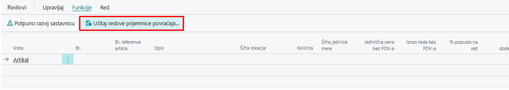
Kao i kod naloga za povrat prodate robe, popunjavaju se redovi izlaznog odobrenja koje je onda potrebno knjižiti, čime će nastati proknjiženo izlazno odobrenje.
Osim toga, moguće je direktno sa same proknjižene izlazne fakture napraviti odobrenje tako što se koriste akcije na alatnoj traci pod trakom Ispravi > Kreiraj korekciju odobrenja.
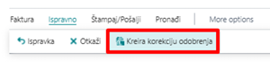
3.7 Opoziv isporuke
Osim što se povrat može knjižiti koristeći gore navedene dokumente, u slučaju da ste određenu isporuku knjižili pogrešno a niste je još uvek fakturisali, istu možete stornirati na vrlo jednostavan način koristeći akciju Opozovi isporuku.
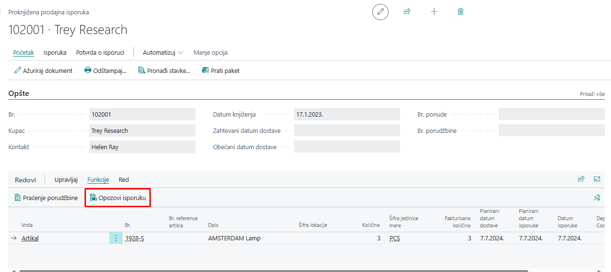
Navedena akcija opoziva odabrani red , tako da ako se hoće poništiti cela isporuka, potrebno je označiti sve redove. Nakon što se proknjiži storno isporuke, u redovima iste otpremnice dodaće se novi red s negativnom količinom.
4. Prodajne cene
U programu Microsoft Dynamics 365 Business Central moguće je definisati prodajne cene na nekoliko načina. Prodajne cene predstavljaju alternativne cene artikala na osnovu kombinacije broja artikla i dobavljača, uz sledeće kriterijume:
Kriterijumi za određivanje prodajne cene
Svaka prodajna cena može biti definisana na osnovu:
- Šifre varijante – varijanta artikla u kojoj se prodaje
- Šifre JM (jedinica mere) – jedinica mere u kojoj se prodaje artikal
- Minimalne količine – najmanja količina potrebna za određenu cenu
- Početnog datuma – datum od kojeg cena postaje važeća
- Krajnjeg datuma – datum do kojeg cena važi
- Šifre valute – valuta u kojoj je cena izražena
Unos prodajne cene
Prodajna cena artikla definiše se u polju Jedinična cena, koje određuje iznos po jedinici mere u izabranoj valuti.
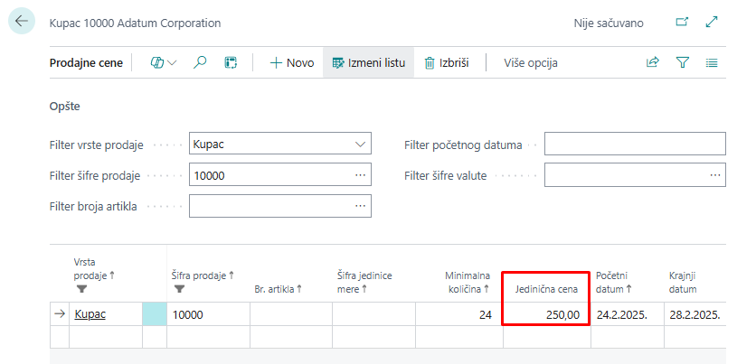
Dodatne napomene
- Sistem automatski primenjuje najpovoljniju cenu za kupca na osnovu definisanih kriterijuma.
- Prodajne cene mogu se postaviti i kroz cenovne liste ili prilagođene cena ugovore sa kupcima.
4.1 Podešavanje prodajnih cena
Prodajne cene mogu se postaviti s liste artikala za označeni artikal ili s kartice artikala. Potrebno je kliknuti na traci akcija na Cene i popusti -> Prodajne cene.
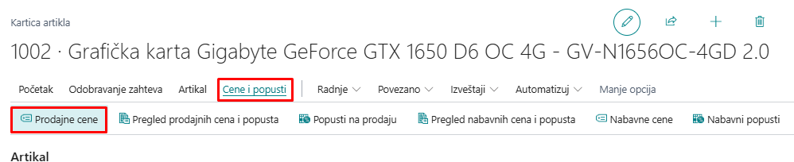
Prodajne cene je moguće postaviti i preko kartice kupca. Na traci akcija kliknuti na Cene i popusti -> Cene.
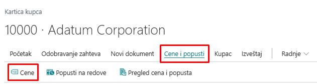
U Business Central-u prodajne cene mogu se definisati po kupcu, grupi kupaca, svim kupcima ili u okviru kampanje. Cena se određuje prema artiklu, varijanti, jedinici mere, minimalnoj količini, datumu važenja i valuti.
Ako se cena odnosi na grupu kupaca, potrebno je prvo kreirati cenovnu grupu i dodeliti je kupcima. Sistem automatski primenjuje najpovoljniju cenu, a cene se mogu postaviti i kroz cenovne liste ili ugovore.
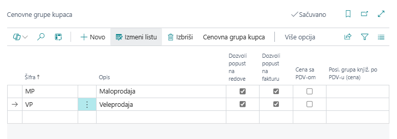
Zatim se redovi cena unose za navedeni cenovnik i artikle:
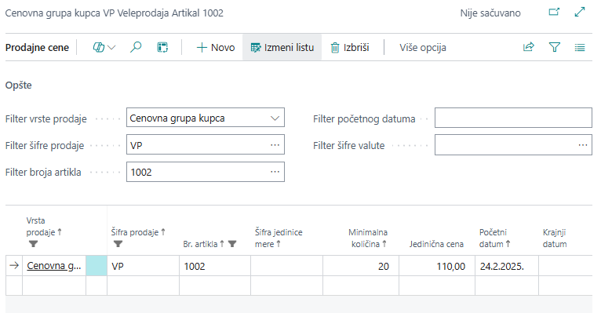
4.2 Upotreba prodajnih cena
Ako kupac ima više definisanih prodajnih cena, Microsoft Dynamics 365 Business Central automatski primenjuje najpovoljniju cenu, pod uslovom da su ispunjeni definisani kriterijumi.
Napomena: Microsoft planira uvođenje nove funkcionalnosti koja će omogućiti izbor metode obračuna cene, pored trenutno važeće opcije "Najniža cena".
Nakon unosa artikla u red prodajnog dokumenta za kupca koji ima postavljenu prodajnu cenu, moguće je proveriti sve prodajne cene na informacionom okviru pod Detalji reda prodaje:
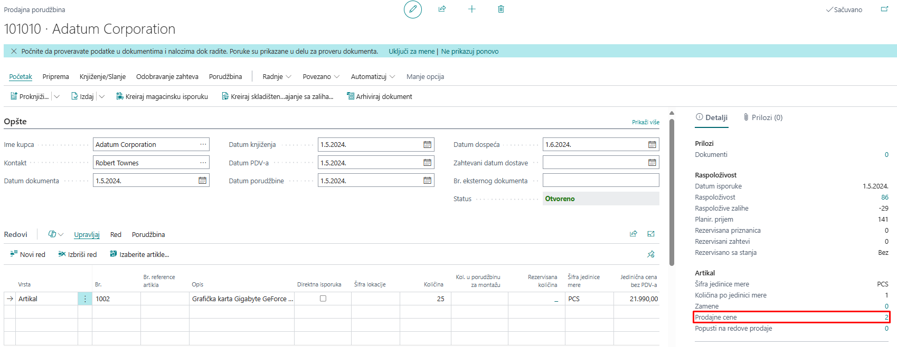
Na slici iznad vidljivo je da za označeni red prodajnoj porudžbini postoji dve prodajna cena za tog kupca. Klikom na vrednost 2, otvara se prozor s redovima prodajnih cena:
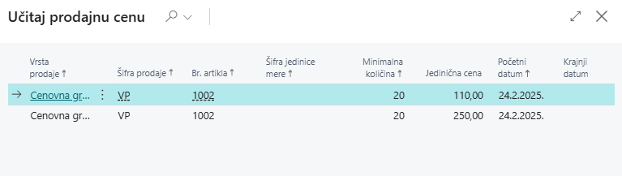
Na ovaj način referent prodaje može proveriti sve prodajne cene za kupca, može pričekati nekoliko dana, može predložiti kupcu kupovinu veće količine ako će biti povoljnija cena.
5. Popusti u prodaji
U programu Microsoft Dynamics 365 Business Central popusti u prodaji funkcionišu slično kao prodajne cene i primenjuju se samo ako su ispunjeni određeni uslovi.
Postoje dve vrste popusta:
- Popusti na red – primenjuju se na pojedinačne stavke u prodajnom dokumentu.
- Popusti na fakturu – obračunavaju se na ukupnu vrednost fakture.
Kao i kod cena, sistem automatski bira najpovoljniju opciju za kupca na osnovu definisanih uslova.
5.1 Popusti na red
Popusti na red primenjuju se na pojedinačne stavke u prodajnom dokumentu.
Iznos popusta biće automatski upisan u redove prodaje ako su ispunjeni sledeći uslovi:
- Kupac odgovara definisanom popustu
- Artikal je obuhvaćen popustom
- Minimalna količina artikla je dostignuta
- Odgovara jedinica mere
- Valuta je ispravna
- Datum transakcije je u okviru početnog i završnog datuma popusta
Sistem automatski bira i primenjuje najpovoljniji popust za kupca.
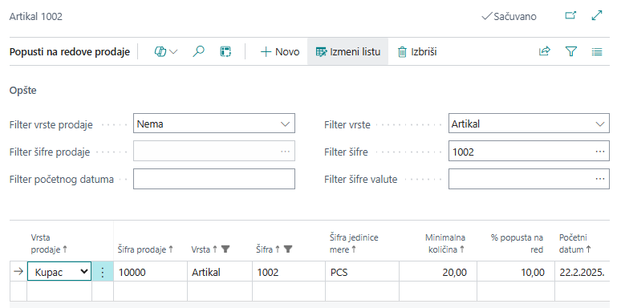
5.1.1 Postavka popusta na red
Postavku popusta na red moguće je napraviti koristeći pretraživač ili direktno preko kartice artikla, tako da se klikne na Cene i popusti -> Popusti na prodaju.
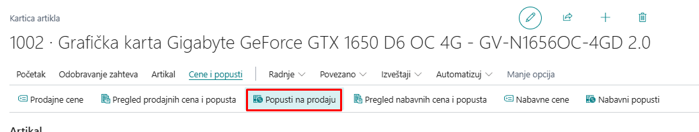
Takođe, istu postavku moguće je napraviti preko kartice kupca, klikom na Cene i popusti -> Popusti na redove:
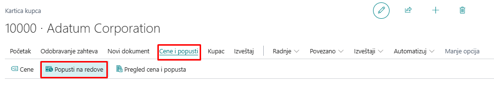
Klikom na akciju "Popusti na redove", otvara se prozor u kojem je moguće definisati popust za određenu kombinaciju kupaca i artikala.
U okviru ovog prozora, popust se unosi u polje "% popusta na red", uz mogućnost dodavanja sledećih dodatnih uslova:
- Minimalna količina – minimalna količina artikala potrebna za ostvarivanje popusta
- Jedinica mere – određuje u kojoj meri se primenjuje popust
- Šifra valute – definiše valutu u kojoj se obračunava popust
- Početni datum – datum od kojeg popust postaje aktivan
- Završni datum – datum do kojeg popust važi
Sistem automatski primenjuje popust na prodajni dokument ako su ispunjeni definisani uslovi.
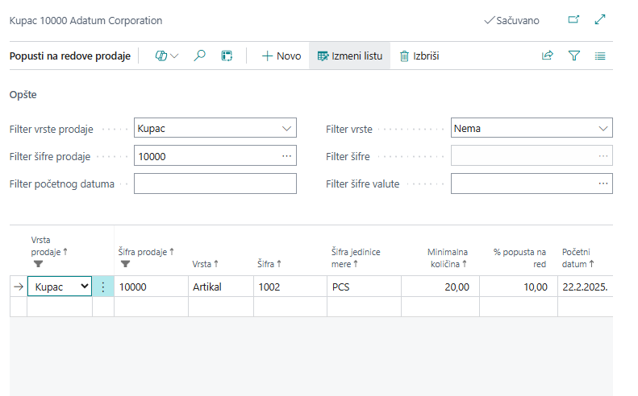
5.1.2 Upotreba popusta na red
Nakon postavljanja popusta na red prodaje, oni se primenjuju u prodajnim dokumentima kao i prodajne cene. Sistem će primeniti popust na red ako su svi uslovi zadovoljeni. Ukoliko postoji više popusta koji zadovoljavaju uslove, sistem će koristiti najveći popust. Kada se artikal unese na red prodaje, u činjeničnom okviru može se proveriti da li postoje popusti na red za kombinaciju kupca i artikla.
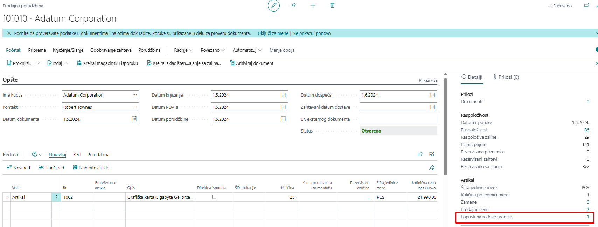
Klikom na vrednost 1, otvara se prozor s detaljnim prikazom popusta na red prodaje:
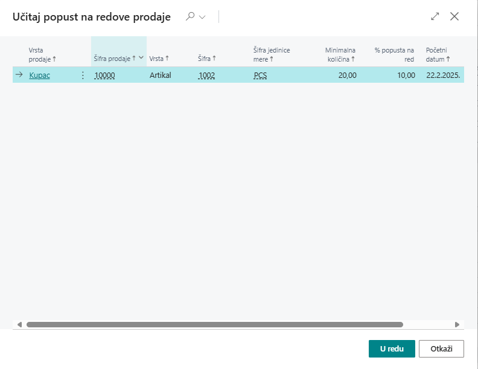
5.2 Popusti na fakturu
Drugi tip popusta u prodaji je popust na fakturu. Ovaj popust se obračunava tako što se procenat popusta oduzima od ukupnog iznosa dokumenta, pod uslovom da ukupan iznos svih redova na prodajnom dokumentu prelazi određeni minimum.
5.2.1 Podešavanje popusta na fakturu
Popust na fakturu moguće je postaviti s kartice kupca (Povezano -> Cene i popusti -> Popusti na fakturu) i primenjuje se na fakture za kupca:
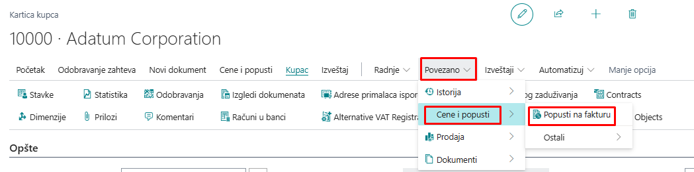
Klikom na akciju Popusti na fakture otvara se prozor gde se definišu procenti popusta na fakture za kupce. Popust na fakturu upisuje se u polje % popusta:
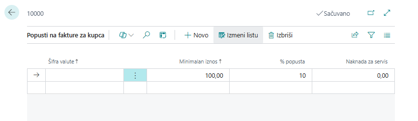
Na kartici kupca, u brzoj kartici Fakturisanje, polje Šifra popusta na fakturu automatski se popunjava brojem kupca prilikom njegovog kreiranja i dodeljuje odgovarajuću šifru popusta na fakturu. Takođe, moguće je definisati globalnu šifru koja se koristi za više kupaca, čime se omogućava brza dodela uslova popusta različitim kupcima.
5.2.2 Upotreba popusta na fakturu
Dodavanjem artikala na redove prodajnog dokumenta povećava se ukupan iznos fakture. Popust na ukupan iznos fakture neće se automatski izračunati; za to je potreban dodatni korak. Kada ukupan iznos na prodajnom dokumentu premaši neki od iznosa definisanih na stranici Popusti na fakture za kupce, popust na fakturu će se obračunati klikom na akciju Izračunaj popust na fakturu.
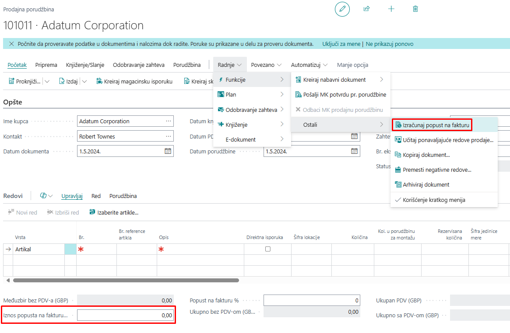
6. Troškovi artikla u prodaji
Kao i u nabavci, u prodaji se može koristiti artikal troška za povezivanje dodatnih troškova, kao što su trošak špedicije, carine, transporta, ambalaže, utovara i istovara robe, kao i drugih troškova s artiklima. Na taj način se dobija tačan uvid i proračun direktnog troška artikla.
6.1 Podešavanje troška artikla
Moguće je postaviti više različitih troškova artikla kako bi se razlikovale vrste troškova i poboljšala statistika troškova i prodaje.
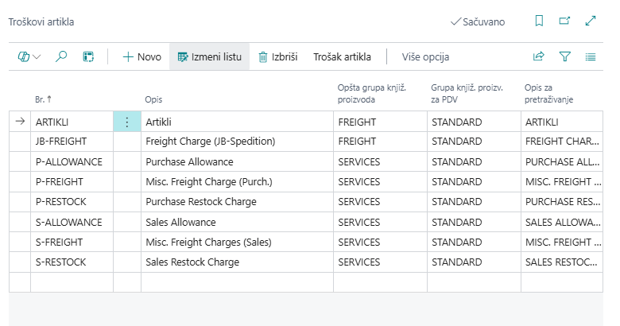
Poput artikla, trošak artikla takođe mora imati postavljene Opštu grupu knjiženja proizvoda i Grupu knjiženja proizvoda za PDV. Kombinacija ovih parametara određuje račun glavne knjige na koji se knjiži trošak artikla. Nakon što se postave troškovi artikla, mogu se koristiti na redovima nabavnih i prodajnih dokumenata.
7. Dodela troška artikla
Trošak artikla može se dodeliti na dva načina:
- Na prodajnim dokumentima koji nisu proknjiženi, a na kojima se nalaze artikli za koje je potrebno dodeliti određeni dodatni trošak.
- Na odvojenoj fakturi povezivanjem troška artikla s proknjiženom izlaznom otpremnicom na kojoj se nalaze artikli na koje se odnose troškovi artikla.
Kada se dodeljuje trošak artikla na prodajnom dokumentu koji sadrži artikle, potrebno je dodati novi red i kao vrstu odabrati Trošak (artikal). Za red s troškom treba popuniti polja Količina i Direktni jedinični trošak. Nakon toga, pozicionirajte se u red s troškom, odaberite Red -> Povezane informacije -> Dodela troška artikla.
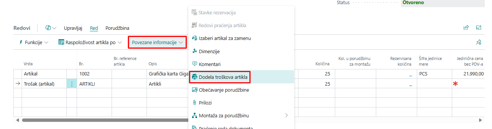
Klikom na Dodela troška artikla, otvara se prozor za raspodelu troškova artikala. Potrebno je prvo preko akcije Dohvati redove otpremnice dohvatiti za koje artikle se želi dodeliti trošak, a onda nakon toga preko akcije Predloži dodelu troška artikla dodeliti trošak po artiklima:
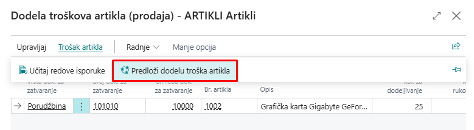
Klikom na funkciju Predloži dodelu troška artikla, otvara se prozor s opcijama raspodele troška:
- Jednako – trošak artikla dodeljen je jednako na sve redove na prozoru Dodela troška artikla.
- Po iznosu – trošak artikla dodeljen je i izračunat prema iznosu svakog reda.
- Po težini – trošak artikla dodeljen je prema zbiru težina artikala definisanih na kartici svakog artikla.
- Po volumenu – trošak artikla dodeljen je prema zbiru volumena artikala definisanih na kartici svakog artikla.
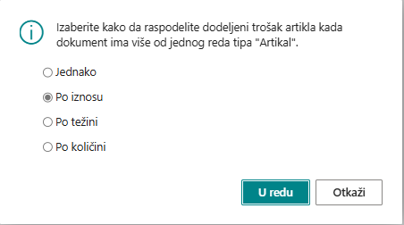
Odabirom jedne od opcija, na primer Po iznosu, sistem će na redovima popuniti polja Kol. za dodelu i Iznos za dodelu:
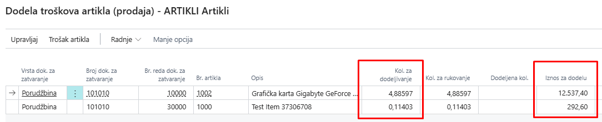
Trošak artikla može se ručno prilagoditi promenom Kol. za dodelu, čime se automatski ažurira polje Iznos za dodelu. Pored funkcije Učitaj redove isporuke, moguće je koristiti sledeće opcije putem dugmeta Akcije:
- Učitaj redove prijemnice prenosa
- Učitaj redove otpremnice povrata
- Učitaj redove isporuke
- Dohvati redove prijemnice povrata
Nakon što se stranica za raspodelu troškova zatvori, trošak će biti raspodeljen na redove prodajnog naloga, te će dokument biti spreman za knjiženje. Knjiženjem će nastati nova stavka u analitici artikla, u kojoj će polje Iznos troška (stvarni) uključivati trošak artikla. Ovo je vidljivo na stavkama vrednosti, gde se pored direktnog troška prodaje pojavljuje još jedna stavka direktnog troška vezana za trošak artikla.
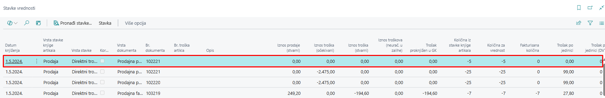
Dodela troška može se dodeliti i preko zasebne fakture, gde će se kao u primeru gore u redovima nalaziti samo red vrste Trošak (artikal). Dodavanje stavke Trošak (artikal) radi se na identičan način.